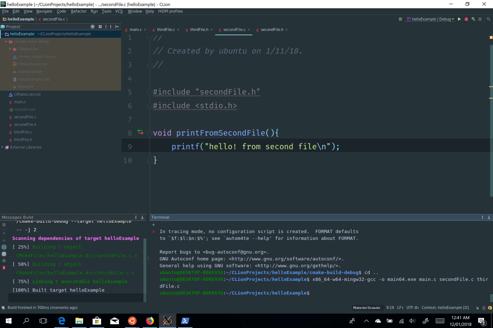
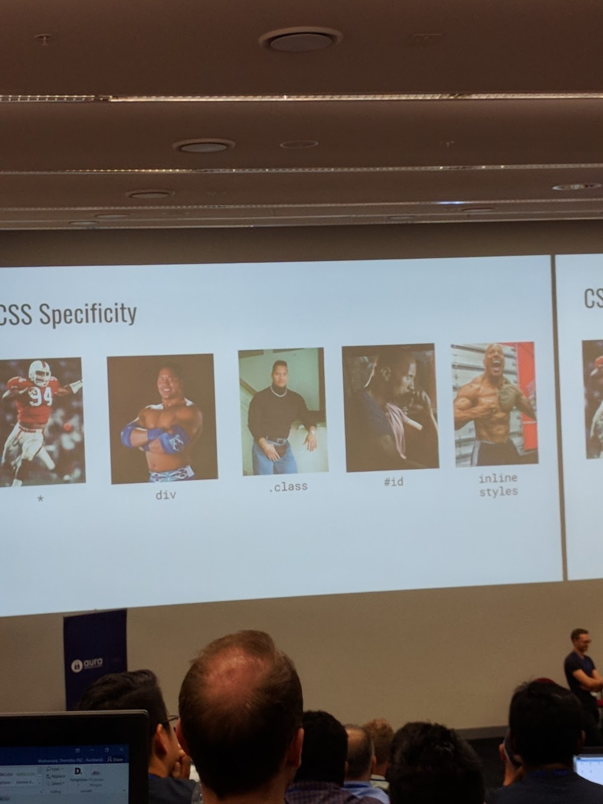

1 / 4
whananaki harbour
2 / 4

Clion on Ubuntu on Windows
I have experimented with setting up clion
on windows with one exception, using GCC on windows.
To do this, I installed ubuntu on windows, XMing to receive the
exported display variable.
I also used the arch guide to install CLion from the
ubuntu on windows terminal. With all this in place, I was able
run clion from within the linux subsystem with all of the native
linux tools and have the GUI for clion display.
This was all to provide the same if not very similar
experience that linux/mac students have on Windows (what most
students actually use)
Courses are taught with a bias towards unix/linux/mac
3 / 4

OWASP 2018
4 / 4

OWASP 2018